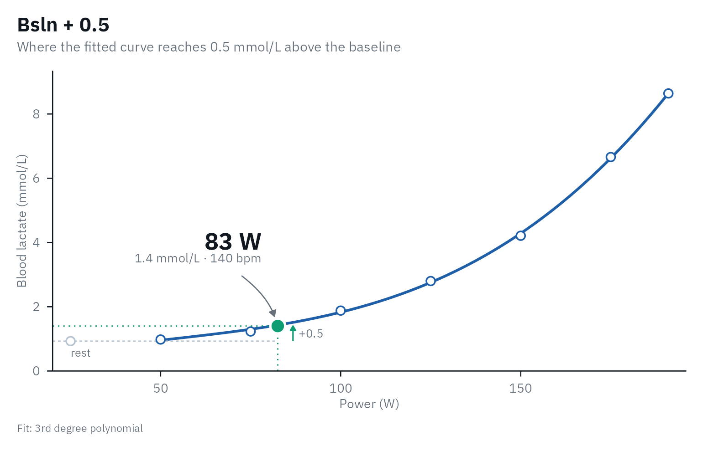
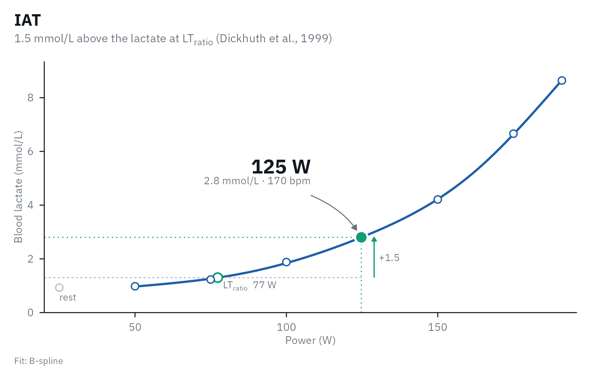
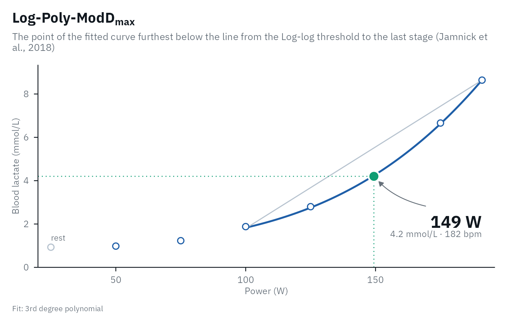
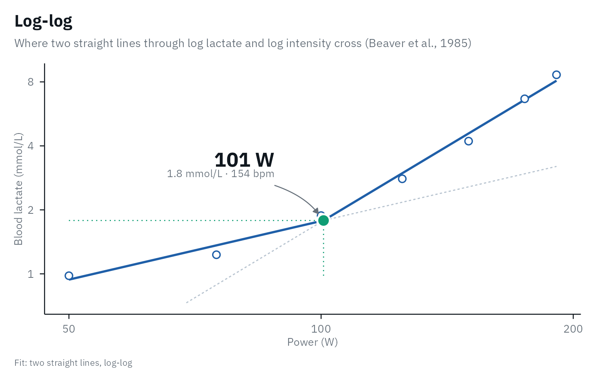
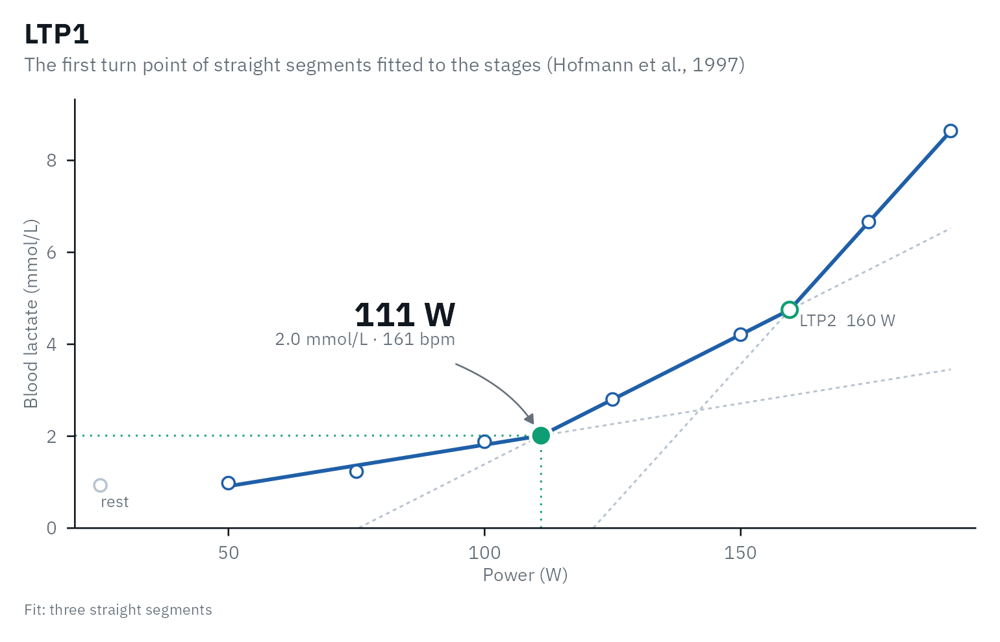
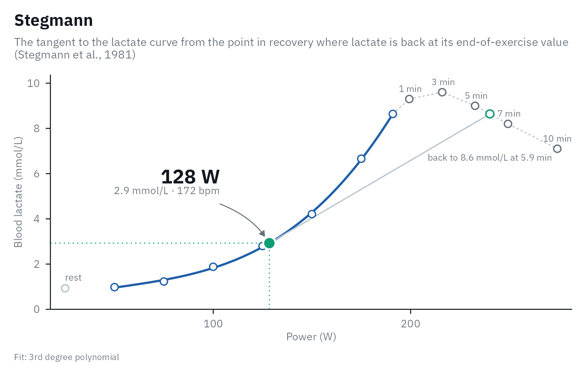
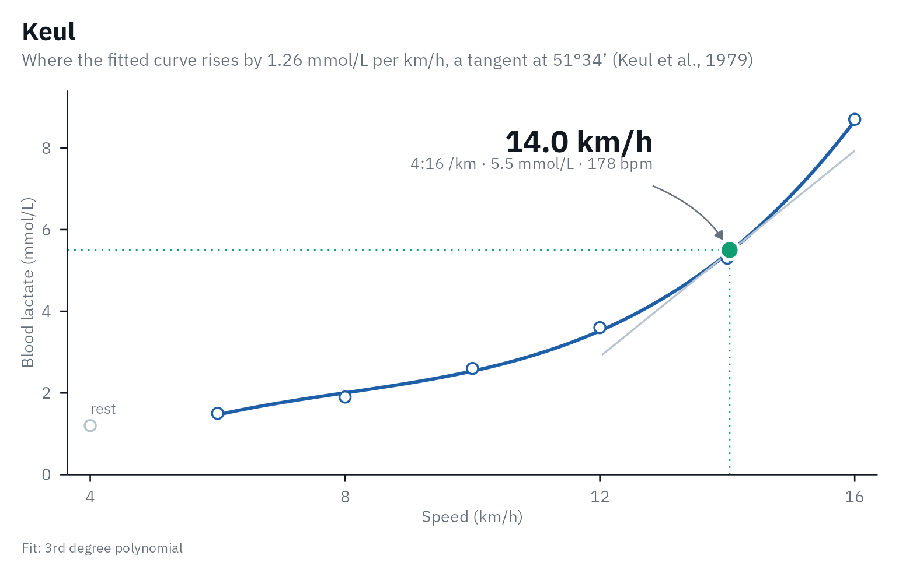

lactater estimates the lactate threshold concepts that are most used in sport science. This article says how each one is defined, how lactater computes it, what the evidence says about it, and how to collect data that does the methods justice. Every statement points to its source, and every source links to the paper.
Two thresholds, many methods
Most authors describe the lactate response to a step test with two thresholds and three phases: a first rise of lactate above resting values (LT1) and a second, abrupt increase (LT2), which split the intensities into three zones with distinct metabolic, hormonal and cardio-respiratory responses (Hofmann & Tschakert, 2017). With gas exchange, the two boundaries can also be estimated without blood, as the estimated lactate threshold and the respiratory compensation point: Keir et al. (2022) explain the physiology behind them and how to find them, and introduce an online app to practice on real data. The methods in lactater fall into the three families of a review that counted 25 lactate threshold concepts: fixed lactate concentrations, a first rise above baseline, and concepts aimed at the maximal lactate steady state (MLSS) or a distinct change in the curve (Faude et al., 2009). Some still carry the name “anaerobic threshold”, which is historical: blood lactate rises because glycolysis speeds up and lactate appears faster than it is removed, not mainly because the muscle runs short of oxygen (Poole et al., 2021).
| Method | What it finds | Curve | Source |
|---|---|---|---|
| Log-log | Where two straight lines through log(lactate) and log(intensity) cross | none (measured stages) | Beaver et al., 1985 |
| OBLA 2.0-4.0 | Intensity at a fixed lactate of 2.0 to 4.0 mmol/L | your choice | Heck et al., 1985; Kindermann et al., 1979; Skinner & McLellan, 1980 |
| Bsln+ 0.5-1.5 | Intensity at 0.5 to 1.5 mmol/L above baseline | your choice | Berg et al., 1990; Zoladz et al., 1995 |
| Dmax | Point of the curve furthest below the line between the first and last stage | 3rd degree polynomial | Cheng et al., 1992 |
| ModDmax | As Dmax, from the stage before the first rise of at least 0.4 mmol/L | 3rd degree polynomial | Bishop et al., 1998 |
| Exp-Dmax | As Dmax, on an exponential plus constant curve | exponential | Hughson et al., 1987 |
| Log-Poly-ModDmax, Log-Exp-ModDmax | As Dmax, from the Log-log threshold | polynomial or exponential | Jamnick et al., 2018 |
| LTP1, LTP2 | Breakpoints of three straight lines through lactate and intensity | none (measured stages) | Hofmann et al., 1997; Pokan et al., 1997 |
| LTratio | Lowest lactate / intensity ratio | B-spline | Dickhuth et al., 1999 |
| IAT | 1.5 mmol/L above the lactate at LTratio | B-spline | Dickhuth et al., 1999; Röcker et al., 1997 |
| Keul, Simon (running) | Speed where the curve rises by 1.26 or 1 mmol/L per km/h (a tangent at 51°34’ or 45°) | 3rd degree polynomial | Keul et al., 1979; Simon et al., 1981 |
| Stegmann | Tangent to the curve from the point in recovery where lactate is back at its end-of-exercise value | your choice | Stegmann et al., 1981 |
How lactater computes them
The plots below are demo_data, a cycling test of 7
stages, with autoplot(results, method = ...).
results <- lactate_threshold(demo_data, intensity, lactate, heart_rate, plot = FALSE)Fitted curves
The 3rd and 4th degree polynomials are fitted by least squares.
“B-spline” is a natural cubic regression spline with 4 degrees of
freedom. The exponential plus constant, a + b * exp(c * x),
is fitted by searching c only, and only positive values as
in Hughson et
al. (1987): for a fixed c the model is linear in
a and b. This needs no starting values and
cannot fail to converge. lactate_fit_quality() compares the
curves on your data.
Fixed concentrations (OBLA, Bsln+, IAT)
The intensity is found by solving the fitted curve for the target lactate. When the curve crosses the target more than once (an early lactate dip), the last crossing where lactate rises through it is used: from there on, lactate stays above the target. Bsln+ takes the resting sample as the baseline, or the first stage when there is no resting sample.
autoplot(results, method = "Bsln + 0.5")
IAT rises from the lowest lactate / intensity ratio (LTratio) instead of from the baseline:
autoplot(results, method = "IAT")
A fixed concentration assumes that everyone’s MLSS sits at the same lactate, and it does not. In national and international athletes the lactate at the MLSS was 3.1 +/- 0.5 mmol/L in rowing, 5.4 +/- 1.0 in cycling and 6.6 +/- 0.9 in speed skating, although the MLSS sat at 72 to 78% of the maximal workload in all three (Beneke & von Duvillard, 1996). In 33 men cycling it was 4.9 +/- 1.4 mmol/L, whatever their performance (Beneke et al., 2000), and in 57 men it ranged from 2.2 to 9.2 mmol/L (Hauser et al., 2014).
The Dmax family
Every variant takes the point where the fitted curve lies furthest
below a straight line that ends at the last stage. Where the
line’s ends sit differs between papers, and lactater follows each one by
default (dmax_anchor = "original"):
- Dmax and Exp-Dmax: on the curve, “the two end points of the curve” (Cheng et al., 1992; Jamnick et al., 2018).
- ModDmax: at the measured values, “the LT and the final lactate point” (Bishop et al., 1998).
- Log-Poly-ModDmax and Log-Exp-ModDmax: from the Log-log threshold on the curve to “the final lactate point” (Jamnick et al., 2018).
Other authors drew Dmax from the measured points too: “the
two end data points” (Bishop et al.,
1998), “the first and last lactate measurements” (Bentley et al.,
2007) or “the first and last measured points” (Heuberger et al.,
2018). dmax_anchor = "fitted" puts every end on the
curve and "observed" every end at the measured values. On a
smooth curve the choice moves Dmax by less than 1 W; when
lactate levels off in the last stage it can move a threshold by tens of
watts.
The ModDmax first rise is “at least 0.4 mmol/L” between
two stages (Heuberger et al.,
2018); Bishop et
al. (1998) and Jamnick et
al. (2018) wrote “> 0.4”, which differs only when two stages
differ by exactly 0.4 mmol/L. Bishop et al. measured plasma lactate from
the fingertip. Change the rise with moddmax_rise, for
example for sweat lactate. The resting sample is never used, and the
Log-log start of the Log-*-ModDmax variants is computed
without it.
autoplot(results, method = "Log-Poly-ModDmax")
Log-log
Beaver et
al. (1985) split the log-log data into two segments that share the
stage between them, fitted a straight line to each, and took the
threshold where the two lines cross. They chose the split by eye; Jamnick et
al. (2018) took “the intersection point of the two lines with the
lowest residuals sum of squares”. lactater tries every stage as the
split, with at least three stages per line (a line through two points
has no residuals, which would favor the shortest segments), so Log-log
needs at least five stages. When the two lines cross outside the
measured stages, the result is NA.
autoplot(results, method = "Log-log")
LTP
Hofmann et
al. (1997) and Pokan et
al. (1997) found each turn point as the crossing of two regression
lines “with minimal standard deviation”, inside a window: LTP1 from the
first lactate value up to 4 mmol/L (Hofmann et al.,
1997) or 75% of the maximal power (Pokan et al.,
1997), and LTP2 from LTP1 to the maximal power. Their tests had
1-min and 90-s stages, so the windows held many samples. With the 6 to
10 stages of a typical step test the windows hold too few stages, so
lactater fits three connected straight segments to all stages at once,
trying every pair of breakpoints with at least two stages per segment.
The result is the global optimum and never depends on starting values.
ltp_fix_first_slope = TRUE keeps the segment before LTP1
flat.
autoplot(results, method = "LTP1")
Stegmann
Stegmann et
al. (1981) followed blood lactate over time, during the test and in
recovery (at 1, 2, 5 and 10 min). After the test lactate first rises and
then falls; from the point where it is back at its end-of-exercise
value, they drew a tangent to the lactate curve of the test. The point
of contact is the threshold, and the slope of the tangent the maximal
rate of lactate elimination. Give lactater the recovery samples as
recovery (minutes and lactate) and the stage duration as
stage_duration: lactater puts the recovery minutes on the
intensity axis at the rate the test rose, finds the return to the
end-of-exercise value by linear interpolation between the recovery
samples, and draws the tangent that touches the fitted curve from below.
Some of the model’s assumptions about lactate kinetics “have been
challenged” (Faude et al.,
2009). Nor can the threshold always be found: when lactate falls
fast after the test, it is already below its end-of-exercise value at
the first recovery sample, which ruled the method out in 5 of 12 elite
cyclists (Płoszczyca et al.,
2020) and 6 of 57 men (Hauser et al., 2014).
lactater then returns NA.
Here with demo_data (3-min stages) and recovery samples
simulated for the example:
recovery <- tibble(time = c(1, 3, 5, 7, 10), lactate = c(9.3, 9.6, 9.0, 8.2, 7.1))
stegmann <- lactate_threshold(
demo_data, intensity, lactate, heart_rate,
method = "Stegmann", recovery = recovery, stage_duration = 3, plot = FALSE
)
autoplot(stegmann, method = "Stegmann")
Keul and Simon (running only)
Keul et al. (1979) and Simon et al. (1981) put the individual anaerobic threshold where the curve reaches a set slope. Both fitted a 3rd degree polynomial to lactate (mmol/L) against running speed (km/h), on treadmill tests at a 5% grade with 3-min stages of 2 km/h and earlobe blood. Keul et al. took the mean slope at 4 mmol/L of 60 tests of 20 cross-country skiers, 1.26 mmol/L per km/h (a tangent at 51°34’); Simon et al. took 1 mmol/L per km/h (45°), as the point where the slope changes most. The slope was set in km/h on that protocol, and neither paper gives a counterpart in watts, so lactater computes these two for running only. The tangent on the plot does not look like 51° or 45°, because the two axes have different scales.
Here with running_recreational from
lactate_tests (simulated, 3-min stages of 2 km/h at a 2%
grade):
runner <- lactate_threshold(
filter(lactate_tests, test == "running_recreational"), intensity, lactate, heart_rate,
method = c("Keul", "Simon"), sport = "running", plot = FALSE
)
autoplot(runner, method = "Keul")
What the evidence says
The strongest evidence on validity comes from studies that compare a threshold with the MLSS measured directly.
| Source | Who and how | What it found | Evidence |
|---|---|---|---|
| Jamnick et al., 2018 | 17 trained male cyclists; five step tests (1, 3, 4, 7 and 10-min stages) and constant-power bouts to find their MLSS; venous blood | Log-Poly-ModDmax from the 4-min test gave the best estimate of the MLSS (mean difference 1.1 W, ICC 0.96). Dmax differed from the MLSS by 19 to 49 W, and OBLA 4.0 overestimated it in every test. | Single study |
| Płoszczyca et al., 2020 | 12 elite male cyclists (V̇O2max 71 mL/kg/min); 3-min stages of +40 W and 30-min constant-power bouts; fingertip blood, Biosen | Dmax was 1.7 +/- 3.9 W below the MLSS, and Stegmann’s IAT 4.3 +/- 7.9 W below in the 7 riders it could be computed for. Bsln + 1.0 was 6.7 W below on average but far off in single riders. ModDmax and OBLA 4.0 overestimated the MLSS by 32 and 43 W. | Single study |
| Hauser et al., 2014 | 57 men from untrained to 14 h of training a week; 4-min stages of +40 W and 30-min constant-power bouts; earlobe blood, Biosen | OBLA 4.0 was 7.4 +/- 25.1 W below the MLSS and Stegmann’s IAT 12.4 +/- 24.6 W above it; LTratio + 1.5 mmol/L, the IAT of lactater, was 37.4 +/- 26.4 W below. Despite correlations of 0.83 to 0.89, single athletes were far off. | Single study |
| Heuberger et al., 2018 | 48 male cyclists, 109 tests (24 on placebo); five tests each; venous blood, Lactate Pro 2 | Intra-subject variation over five tests: 3.4% for Dmax, 3.6% for IAT, 3.8% for 4 mmol/L, 4.3% for ModDmax. ModDmax predicted a time trial best (r = 0.94); 4 mmol/L was a simpler alternative. | Single study |
| Jamnick et al., 2020 | Review of the methods to determine exercise intensity | LT1 has some evidence for separating the moderate and heavy domains; most methods have little for the heavy and severe domains. Test-retest variation: Dmax 3.8-10.3%, OBLA 4.0 3.1-8.2%, Bsln+ 0.5, 1.0 and 1.5 1.2-3.7%, 3.4-12.6% and 3.1-3.4%. One athlete’s threshold can differ by about 30% between methods. Bsln+ 1.5 estimated the MLSS in two studies with 3-min stages, not with other stage lengths. | Review |
| Heck et al., 1985 | 16 men of varying fitness running on a treadmill; step tests with 3-min and 5-min stages, and 25-min runs to find their MLSS; earlobe blood | Keul’s threshold correlated with the speed at the MLSS (r = 0.98 for both stage lengths). Computed from Heck’s raw data, it lay 0.20 m/s above the MLSS with 3-min stages and 0.06 m/s below with 5-min stages (Faude et al., 2009, Table V). | Single study |
How close a method lands to the MLSS depends on the protocol and the athletes: Dmax was within 2 W of it with 3-min stages in elite cyclists, but 19 to 49 W off in the study of Jamnick et al. Most of this evidence comes from trained, male, cycling populations; check how well it matches the athletes you test.
Whether the MLSS is the boundary between the heavy and the severe domains is itself debated. Jones et al. (2019) argue that the MLSS, as usually measured, falls below the maximal metabolic steady state, and that the critical power marks the boundary. In a meta-analysis of 10 studies the critical power was 12 W above the MLSS on average, with 95% limits of agreement from -19 to 44 W, and further above it in fitter and younger people (Micheli et al., 2025).
Check it in your own athletes
Constant-load bouts give the MLSS itself. lactate_mlss()
finds it and how far each threshold of the step test lies from it, and
Beyond
the step test explains how to run the bouts and what the studies
comparing the MLSS with the critical power found.
Collecting good data
The methods are only as good as the test behind them: stage duration, sampling site, sample type and analyzer all change the numbers. Best practices for a step test collects what the literature says, as a checklist for running a test and analyzing it.
References
Beaver WL, Wasserman K, Whipp BJ. Improved detection of lactate threshold during exercise using a log-log transformation. J Appl Physiol. 1985;59(6):1936-40. doi:10.1152/jappl.1985.59.6.1936
Beneke R, von Duvillard SP. Determination of maximal lactate steady state response in selected sports events. Med Sci Sports Exerc. 1996;28(2):241-6. doi:10.1097/00005768-199602000-00013
Beneke R, Hütler M, Leithäuser RM. Maximal lactate-steady-state independent of performance. Med Sci Sports Exerc. 2000;32(6):1135-9. doi:10.1097/00005768-200006000-00016
Bentley DJ, Newell J, Bishop D. Incremental exercise test design and analysis: implications for performance diagnostics in endurance athletes. Sports Med. 2007;37(7):575-86. doi:10.2165/00007256-200737070-00002
Berg A, Jakob E, Lehmann M, Dickhuth HH, Huber G, Keul J. Current aspects of modern ergometry. Pneumologie. 1990;44(1):2-13. PMID:2408033
Bishop D, Jenkins DG, Mackinnon LT. The relationship between plasma lactate parameters, Wpeak and 1-h cycling performance in women. Med Sci Sports Exerc. 1998;30(8):1270-5. doi:10.1097/00005768-199808000-00014
Cheng B, Kuipers H, Snyder A, Keizer H, Jeukendrup A, Hesselink M. A new approach for the determination of ventilatory and lactate thresholds. Int J Sports Med. 1992;13(7):518-22. doi:10.1055/s-2007-1021309
Dickhuth HH, Yin L, Niess A, et al. Ventilatory, lactate-derived and catecholamine thresholds during incremental treadmill running: relationship and reproducibility. Int J Sports Med. 1999;20(2):122-7. doi:10.1055/s-2007-971105
Faude O, Kindermann W, Meyer T. Lactate threshold concepts: how valid are they? Sports Med. 2009;39(6):469-90. doi:10.2165/00007256-200939060-00003
Hauser T, Adam J, Schulz H. Comparison of selected lactate threshold parameters with maximal lactate steady state in cycling. Int J Sports Med. 2014;35(6):517-21. doi:10.1055/s-0033-1353176
Heck H, Mader A, Hess G, Mucke S, Muller R, Hollmann W. Justification of the 4-mmol/l lactate threshold. Int J Sports Med. 1985;6(3):117-30. doi:10.1055/s-2008-1025824
Heuberger JAAC, Gal P, Stuurman FE, de Muinck Keizer WAS, Mejia Miranda Y, Cohen AF. Repeatability and predictive value of lactate threshold concepts in endurance sports. PLOS ONE. 2018;13(11):e0206846. doi:10.1371/journal.pone.0206846
Hofmann P, Pokan R, von Duvillard SP, Seibert FJ, Zweiker R, Schmid P. Heart rate performance curve during incremental cycle ergometer exercise in healthy young male subjects. Med Sci Sports Exerc. 1997;29(6):762-8. doi:10.1097/00005768-199706000-00005
Hofmann P, Tschakert G. Intensity- and duration-based options to regulate endurance training. Front Physiol. 2017;8:337. doi:10.3389/fphys.2017.00337
Hughson RL, Weisiger KH, Swanson GD. Blood lactate concentration increases as a continuous function in progressive exercise. J Appl Physiol. 1987;62(5):1975-81. doi:10.1152/jappl.1987.62.5.1975
Jamnick NA, Botella J, Pyne DB, Bishop DJ. Manipulating graded exercise test variables affects the validity of the lactate threshold and V̇O2peak. PLOS ONE. 2018;13(7):e0199794. doi:10.1371/journal.pone.0199794
Jamnick NA, Pettitt RW, Granata C, Pyne DB, Bishop DJ. An examination and critique of current methods to determine exercise intensity. Sports Med. 2020;50(10):1729-56. doi:10.1007/s40279-020-01322-8
Jones AM, Burnley M, Black MI, Poole DC, Vanhatalo A. The maximal metabolic steady state: redefining the ‘gold standard’. Physiol Rep. 2019;7(10):e14098. doi:10.14814/phy2.14098
Keir DA, Iannetta D, Mattioni Maturana F, Kowalchuk JM, Murias JM. Identification of non-invasive exercise thresholds: methods, strategies, and an online app. Sports Med. 2022;52(2):237-55. doi:10.1007/s40279-021-01581-z
Keul J, Simon G, Berg A, Dickhuth HH, Goerttler I, Kübel R. Bestimmung der individuellen anaeroben Schwelle zur Leistungsbewertung und Trainingsgestaltung. Dtsch Z Sportmed. 1979;30(7):212-8.
Kindermann W, Simon G, Keul J. The significance of the aerobic-anaerobic transition for the determination of work load intensities during endurance training. Eur J Appl Physiol Occup Physiol. 1979;42(1):25-34. doi:10.1007/BF00421101
Micheli L, Lucertini F, Grossi T, Pogliaghi S, Keir DA, Ferri Marini C. Analysis of the factors influencing the proximity and agreement between critical power and maximal lactate steady state: a systematic review and meta-analyses. PeerJ. 2025;13:e19060. doi:10.7717/peerj.19060
Płoszczyca K, Jazic D, Piotrowicz Z, Chalimoniuk M, Langfort J, Czuba M. Comparison of maximal lactate steady state with anaerobic threshold determined by various methods based on graded exercise test with 3-minute stages in elite cyclists. BMC Sports Sci Med Rehabil. 2020;12:70. doi:10.1186/s13102-020-00219-3
Pokan R, Hofmann P, von Duvillard SP, et al. Left ventricular function in response to the transition from aerobic to anaerobic metabolism. Med Sci Sports Exerc. 1997;29(8):1040-7. doi:10.1097/00005768-199708000-00009
Poole DC, Rossiter HB, Brooks GA, Gladden LB. The anaerobic threshold: 50+ years of controversy. J Physiol. 2021;599(3):737-67. doi:10.1113/JP279963
Röcker K, Schotte O, Niess AM, Heitkamp HC, Dickhuth HH. Laufbandtestdaten und Wettkampfprognosen für den Langstreckenlauf (Treadmill testing and the prediction of race results in distance running). Dtsch Z Sportmed. 1997;48(9):315-23.
Simon G, Berg A, Dickhuth HH, Simon-Alt A, Keul J. Bestimmung der anaeroben Schwelle in Abhängigkeit vom Alter und von der Leistungsfähigkeit. Dtsch Z Sportmed. 1981;32(1):7-14.
Skinner JS, McLellan TH. The transition from aerobic to anaerobic metabolism. Res Q Exerc Sport. 1980;51(1):234-48. doi:10.1080/02701367.1980.10609285
Stegmann H, Kindermann W, Schnabel A. Lactate kinetics and individual anaerobic threshold. Int J Sports Med. 1981;2:160-5. doi:10.1055/s-2008-1034604
Zoladz JA, Rademaker AC, Sargeant AJ. Non-linear relationship between O2 uptake and power output at high intensities of exercise in humans. J Physiol. 1995;488(1):211-7. doi:10.1113/jphysiol.1995.sp020959